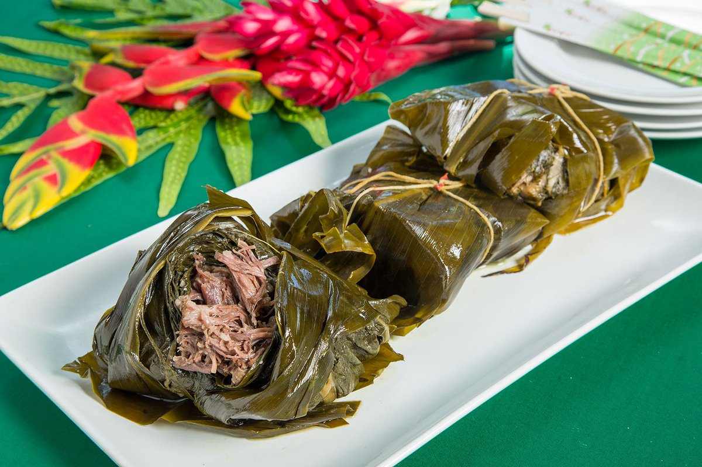

Lau Lau

Lau Lau is a Hawaiian dish made of pork wrapped in Lau Lau(taro) leaves
Lau lau is a Hawaiian dish made of pork and butterfish wrapped in lu'au leaves and ti leaves. Lau lau is steamed and eaten with rice and poi. It's a real treat!
Ingrediants
- Lu'au leaves
- Ti leaves
- Pork butt and/or pork belly
- Salted butterfish
- Hawaiian Sea Salt
Cooking instructions
- First, prep the two types of leaves. LUAU LEAVES: take the luau leaves and wash them thoroughly one by one. Chop off the bottom stem that extends past the bottom of the leaf. Chop that stem into ½-inch pieces and set aside. TI LEAVES: wash the ti leaves and pat dry. Remove the main/thickest vein that runs through the center of the ti leaf. Removing this vein allows the ti leave to be more pliable/easy to fold as you will be using it to wrap the fillings. Set aside.
- At a clean workstation, stack 3-5 luau leaves on the counter. Arrange them so that the biggest leaf is on the bottom and the smallest leaf is on top.
- In the center of the leaf, put in a few chunks of the pork butt and butterfish. Add 2-3 pieces each cubed carrots and purple Okinawan sweet potato, if using. Add several of the chopped luau leaf stems. Sprinkle over Hawaiian sea salt.
- Use the luau leaves to fold and wrap all the fillings in a tight bundle.
- Next, wrap the ti leaves around the luau leaf bundle. Use the ti leaf ends to tie a topknot. If the ends are too short, use a string to tie/secure the bundle.
- Put the wrapped lau lau in a steamer. Steam for three to four hours till nice and tender. Remove the ti leaf (you can't eat the ti leaf), and serve! Ideally with rice and/or poi, chili pepper water and all your favorite Hawaiian side dishes like lomi lomi salmon and chicken long rice.